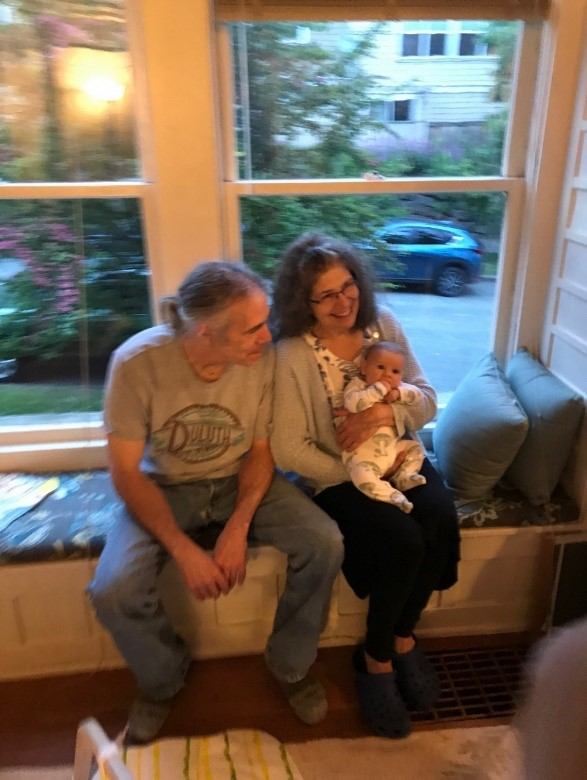
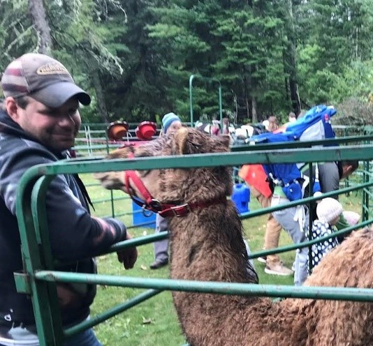
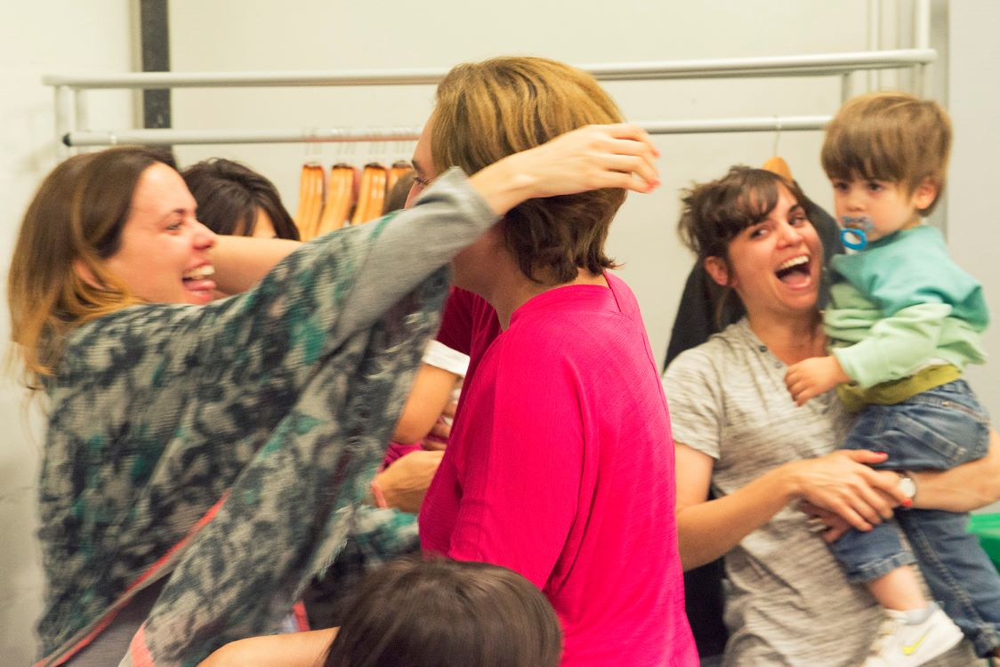

Last chapter, we looked at humor family words—context-specific variations of the generic word “humor.”
Humor family words are alternative words for humor. That means we’ll see humor tells whenever someone feels appreciation, generosity, safety, and so on:

Above, grandparents feel appreciation, comfort, connection, delight, joy, relief, welcome and so on—and so they expresses humor tells like social seeking (with the baby or someone off-camera), socially tightening (by sitting close to each other), smiling, relaxing posture, having energy, having raised spirits, expressing optimism, and so on.
We see the same thing in the picture below. There’s a quiet moment at a petting zoo, and the caretaker of the camel stops by to readjust its harness and check up on it:

The man feels appreciation, connection, relief, safety, and so on—and so he expresses humor tells like smiling, relaxed posture (leaning on bar), brightening, focusing on present, loss of situational awareness (ignoring what’s around him), raised spirits, social tightening (with camel), and so on.
People involved in a space program celebrate successfully landing a rover on Mars:
The people feel high-intensities of accomplishment, achievement, belonging, connection, delight, joy, release, relief, safety, success, and so on—and so they express high-intensity variations of humor tells like brightening, energy, expansive posture, flushing, informal posture, laughter, loosening, reduction of physical tension, smiling, touching others, touching self, high energy, non-normative behavior, loss of situational awareness, social integration, social seeking, social tightening, and so on.
We can also guess that their humor will have a long duration too. Years of hard work would have established durable expectations—and since it takes a long time to acclimate to these durable expectations, they have the emotional conditions for a long duration of humor.
A soldier celebrates the news that a war is over:
He feels accomplishment, achievement, comfort, delight, joy, realization, release, revelation, relief, safety, success, and so on—and so he brightens, gains energy, expands posture, raises voice, moves informally, smiles, focuses on present, loses situational awareness, has non-normative behavior, and so on.
Families celebrates the news of an election outcome:

They feel accomplishment, achievement, belonging, connection, delight, generosity, joy, realization, release, revelation, success, welcome and so on—and so they brighten, expand posture, flush, laugh, loosen, reduce physical tension, smile, touch others, touch self, feel optimistic, socially integrate, social seek, social tighten, and so on.
When the woman finishes her song to applause, she feels accomplishment, achievement, delight, success, and so on.
When asked a question, she feels comfort, safety, welcome, and so on. When she's surprised by something the man says, she feels insight and realization. Throughout the conversation, her humor tells show appreciation, connection, belonging, joy, and so on.
Since she feels humor family words, she expresses humor tells—since she expresses humor tells, she feels humor family words.
While she smiles and laughs throughout, we can look beyond those too for other humor tells: she has energy, flushes, moves informally with informal posture (swaying), touches self (hands clasped), social seeking and social tightening, focused on present, raised spirits, and so on.
The man shows far fewer humor tells, and so we should be careful when characterizing their emotional states together. While they both feel humor, they feel it to different degrees—which can make a simple description misleading. ("They both feel humor.")
We can re-watch any of these videos without sound to better focus on the humor tells and humor family words.
A soldier gives an ironic interview during an occupation of a city. When the camera pans to his audience, we see those soldiers feeling intense humor.
The soldiers are staggered (informal posture, informal movement, loose, with relaxed posture, non-normative behavior, and so on), with red faces (flushing) and complete loss of situational awareness. They at least briefly feel optimism, raised spirits, reduction of stress, and feel social integration. They touch each other.
These humor tells express humor family words: the audience feels acceptance, appreciation, connection, delight, forgiveness, reconciliation, release, revelation, relief, and so on.
But because the humor tells are so intense, we'd say these humor family words were also correspondingly intense (intense appreciation, intense release, and so on)—and since their humor was such a long duration, we'd say that the mistake went against durable expectations.
Note that just because we can describe the soldiers' humor as "intense reconciliation (with the situation in this specific moment)," that doesn't tell us:
how long this feeling will persist
what actions will be taken because of it
that we've accurately understood the context and active topics of the people in this video
(and so on)
As the friend gets the scarfed wrapped around her, she feels realization (as she understands what happens), comfort, generosity, belonging, appreciation, release, safety, welcome, and so on—and so smiles, social seeks, social tightens, brightens, relaxes, and so on.
The friend who applies the scarf increasingly smiles throughout the clip. But we can see her humor more clearly when we look for humor tells other than just smiling and laughing—like how she touches others, is making an effort to spread humor, is focusing on present, shows increased agency (relative to right before), socially tightens, tries to increase social integration, and so on.
As the victorious wrestler stands, he smiles, brightens, has expansive posture, loosens, has high energy (relative to the other wrestler), has increased agency (relative to the other), has raised spirits, socially tightens (by moving closer to the other), and so on.
The losing wrestler shows inverse humor tells—he curls his posture instead of expanding it, frowns instead of smiling, turns from his opponent instead of social seeking toward him, has lowered spirits instead of raised spirits, and so on.
Since humor tells and humor family words are the same thing ("humor"), we can describe the victorious sumo as feeling accomplishment, achievement, comfort, joy, realization, release, relief, safety, success, and so on. Since he feels these things, he expresses humor tells.
By contrast, the losing sumo doesn't feel humor family words. Instead of accomplishment, he feels failure; instead of comfort, discomfort; instead of joy, grief; instead of release, tension; and so on.
We can also notice who else is showing humor in this scene—the crowd! They're showing humor tells and feeling humor family words more intensely than the victorious wrestler is in this clip. The crowd expands their posture by leaning back and extending their arms; touch self by clapping; cheer and raise their voices; lose their sense of situational awareness as they only focus on what's in front of them; and so on.